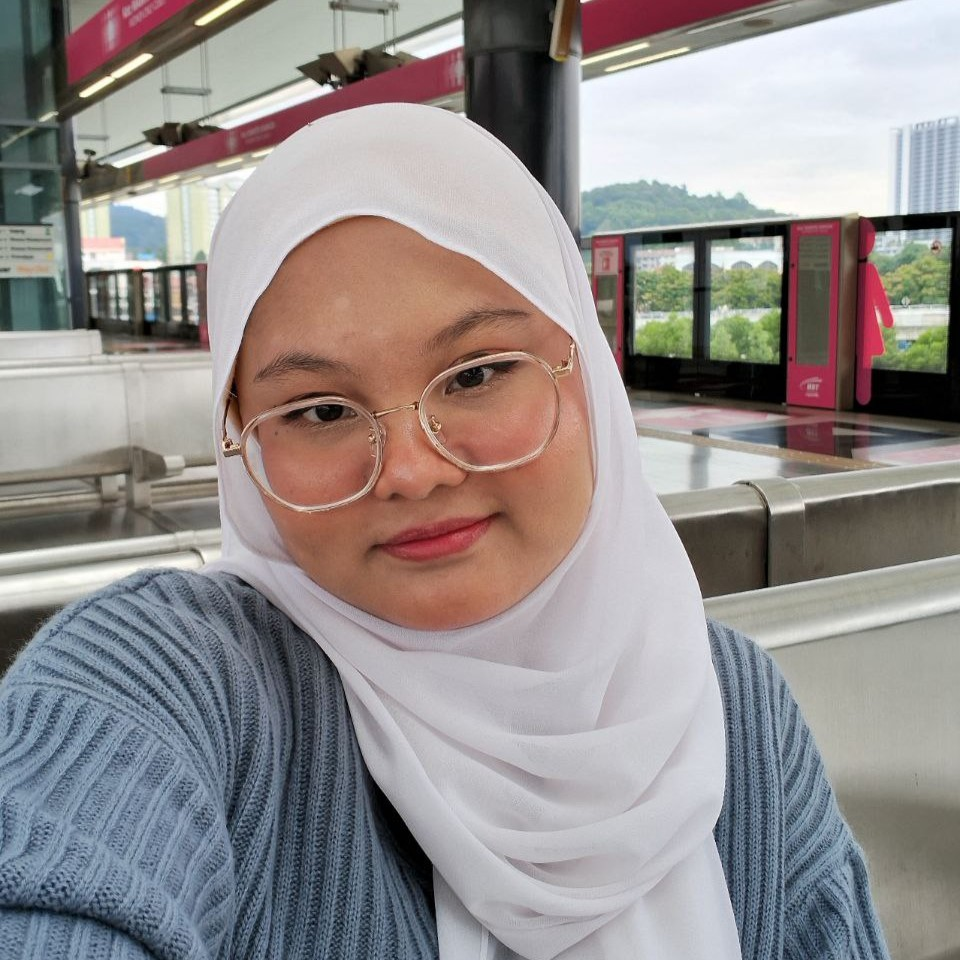

Here's some facts about me ^^
Name : Nur Amsyar Aima Binti Hasnizam
Birthday : 22 February
MBTI Type : ENFP
Fun Facts About Me
- Second oldest out of 5 siblings
- Loves to sing and dance
- Joined dance competitions since kindergarten
- Used to play softball for school's team
- Can speak Korean and Japanese (intermediate level)
- Represented Malaysia in 2019 ASEAN Korean Speech Contest in Incheon, South Korea
- Can understand basic Mandarin (used to learn it during Elementary School)
- Was a librarian since elementary school
- Have a cat named Labu (yes, he is fat)
- My favourite color is Blue!
- Hates vegetables
You can contact me here :